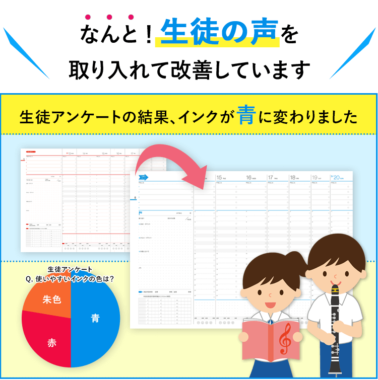
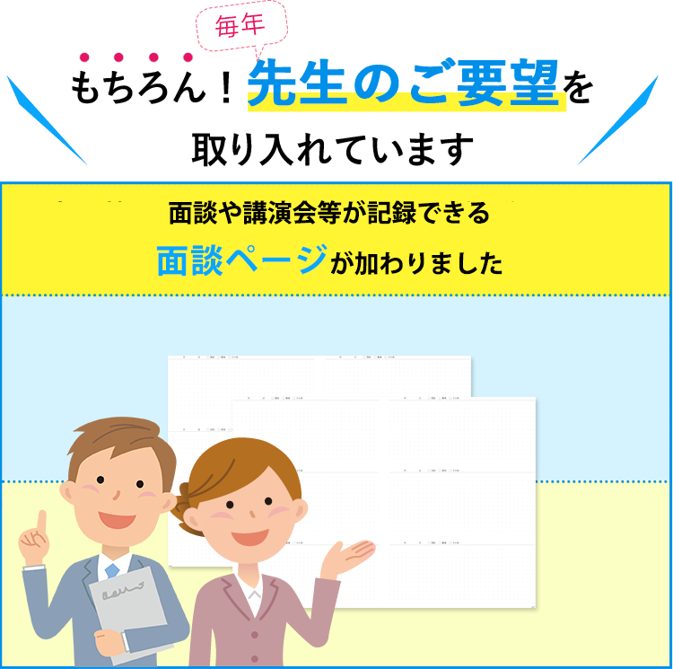

自己肯定感を高め、心の成長を促す
「フォーサイト」手帳で「自分と向き合う」ことが出来るので、自己肯定感の醸成、人格の向上につながると思います。自分を見つめ直していくと、思った以上に「自分のできる事」「自分の良いところ」を見つけることができるからです。また、心の掃除としても有効です。今の子供たちはSNSで気持ちを吐き出すことも多いようですが、自分の手で書いて、常に見返すことができる状態で自分の気持ちを吐き出すことも必要だと考えています。

模試クラス偏差値が８アップしました！
「昨年の７月の模擬試験のクラス平均偏差値が53．3だったのですが、今年の４月の模試では61.1にまで 上がりました。手帳を確認して生徒の自己肯定力が上がるような コミュニケーションを図るとともに、成績も驚 くほど上がっています。フォーサイト手帳を利用する前はプリントにToDoリストを書かせていたのですが、 「書いて提出すればよい」という作業になってしまいました。「フォーサイト」手帳ですと何度も振り返りを行 うことで、教師側から何も言わなくても生徒自身が気づきを得て変化するようになりました。
課題の提出率が100％に！
「フォーサイト」手帳は「やることリスト」に「いつ小テストがある」 「課題はいつまでだから、この日のうちにこれをやる」など先々のことを考えて計画が立てられる点で非常に 役立っています。 「フォーサイト」手帳を導入してからは、課題提出率が顕著に改善されるようになり、提出率100％のことが 多くなりました。たまに遅れる生徒もいますが、遅れていることをしっかり気づいて自分から報告してきます。


公益財団法人日本漢字能力検定協会 漢検